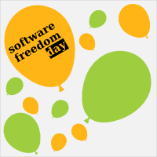

Software Freedom Day (SFD) is a worldwide celebration of Free and Open Source Software (FOSS). Our goal in this celebration is to educate the worldwide public about the benefits of using high quality FOSS in education, in government, at home, and in business -- in short, everywhere!
The admission to the event is FREE and open to all enthusiastic people, though we suggest a "Pay-What-You-Can" donation to support FreeGeek Chicago and it's educational and outreach programming. If you write open source software, use free software, or are curious and want to learn about software freedom and the FOSS community, come join us for Software Freedom Day!
Our vision is to empower all people to freely connect, create and share in a digital world that is participatory, transparent, and sustainable.